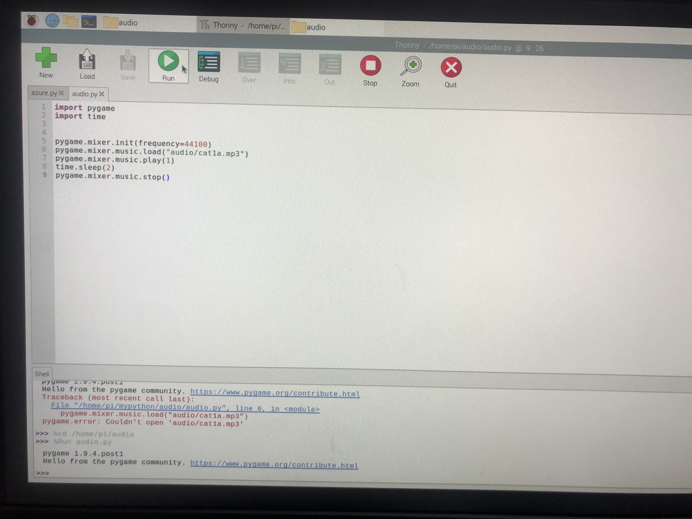

raspberrypi4 猫ちゃんの音声出力🐈

ラズパイのpythonでオーディオファイルを再生を参照に
猫ちゃんの音声出力を行う。
①猫の音声をダウンロードし、作成したaudioファイルに入れる

②thonny pythonを開き、audio.pyを作成。プログラムを参照サイトよりコピペ

③猫の音声が出力される
※注意
audio.pyと音声ファイルを同じところに保存してしまうと
pythonは動かない！！
したがって
保存するときは
必ず同じフォルダ内にもう１つフォルダを作り、その中に猫の音声ファイルを保存する。
◆失敗例

◆成功例